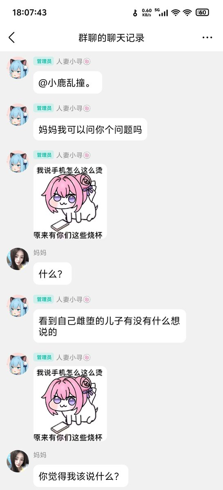
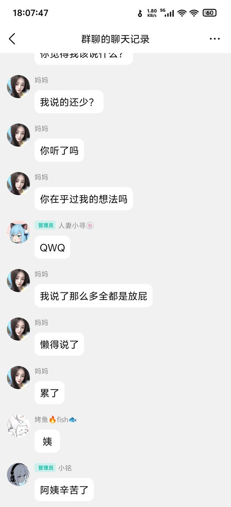
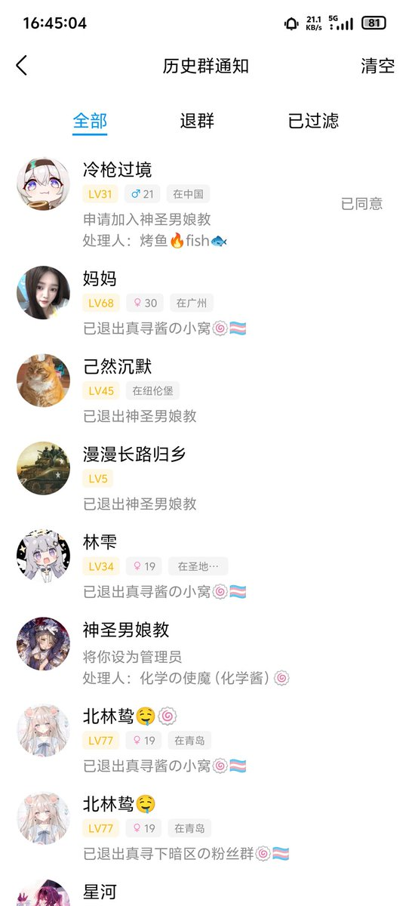
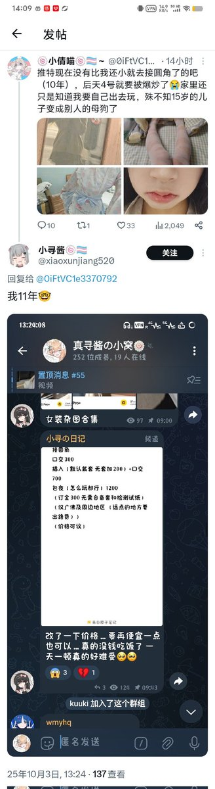

青石巷🍃🕊️
@qingshixiang258
@notYuZerO 这畜生跟sb一样，炒作炒的脸都不要了，如果不是炒作那更畜生了，一点三观没有，她妈妈对她不说家长党吧，也算是不错了，还天天跟个小学生一样，说的话都不过脑子




传奇出生乌鲁鲁（浮木克星）
@notYuZerO
无题🤓👍
HRT女装rle什么的我没意见。但
援交就是主动去当阉婊子去了
至于把他亲妈拉进群里瞎说烂话，最后全家越来越容不下它，明明是情理之中的事，它却把错推到它家人身上？
这家伙才他妈十四，能不能快点死啊我等不及了 https://t.co/dgSV41Q89j